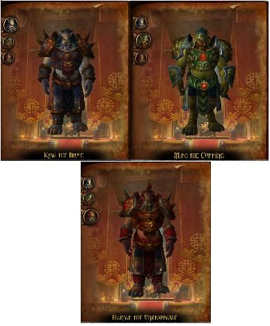
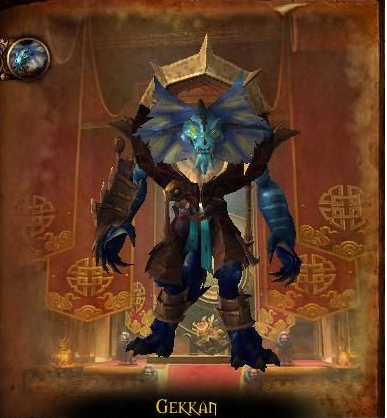
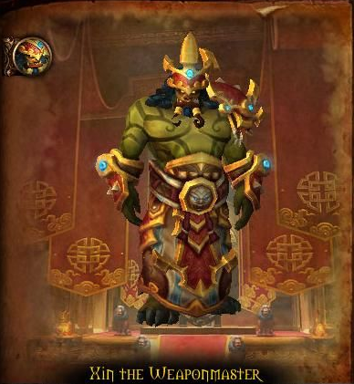

Trial of the King
HP: 843.100
Kuai the Brute
- Mu'Shiba
- Ravage
- Shockwave
Ming the Cunning
- Whirling Dervish
- Magnetic Field
- Lightning Bolt
Haiyan the Unstoppable
- Conflagrate
- Meteor
- Traumatic Blow
Tactics
3 boss fog random érkezni.
Kuai the Brute
A petjével fog érkezni, akit nem lehet tauntolni, ezt a petet kell előszörmegölni, és aztán magát Kuai-t.
Ez a pet castolni fog egy Ravage nevű spellt, ami 36k/mp physical dmg-ot okoz 10 másodpercig, ezt ki kell healelni.
Shockwave útjából el kell állni, mert halálos is lehet.
Ming the Cunning
Kerülni kell a tornádot, mert 72k-s dmg-t okoz és hátralök.
Lightning boltot castol, ami 74k-s dmg-t okoz, de ez szakítható.
Magnetic Field-nél a boss elkezd pörögni és 54k-s nature dmg-t okoz, célszerű ilyenkor hátrébb állni a bosstól.
Haiyan the Unstoppable
Meteort fog castolni, ami 400k-s dmg-t okoz, viszont elosztlik a playerek között, ezért ajánlatos egy csoportba állni.
Conflagrate: kiválaszt egy random embert, akibe belesebez 50k fire dmg-t 1 másodpercenként és egy közelben lévő emberre átugrik, ezzel célszerű kiállni a tömegből.
Traumatic Blow: 200%-kal több physical dmg-t okoz a tanknak és egyúttal 50% heal csökkentés rak rá.

Gekkan
HP: 675.450
- Reckless Inspiration
- Inspiring Cry
- Shank
- Cleansing Flame
- Hey of Lethargy
Tactics
Ironhide-ot cc-ben kell tartani az egész fight alatt.
Az addok közül az Oraclet kell megölni elsőnek, után a sorrend mindegy.
Az addokat kell először megölni és utána a bosst (kivéve Ironhide).
Xin előtt oroszlánok találhatóak, ezeket úgy kell megölni, hogy ne húzzuk be velük a bosst.
Az előbb említett 70%-nál és 30%-nál jönni fog 3 add, amit lekell ölni.

Xin the Weaponmaster
HP: 675.450
- Ground Slam
- Circle of Flame
- Inciting Roar
- Whirlwinding Axes
- Blade Trap
- Death From Above
Tactics
A tanknak a grouptól elfordítva kell tankolnia a Ground Slam miatt, maga elő fogja castolni és 150k-s pyhsical dmg-t okoz illetve csökkente az armorját 25%-kal.
Whirlwinding Axes: Pörgő baltákat idéz, amik pörögnek és mozognak az emberek felé, el kell őket kerülni.
Circle of Flame: megjelenik egy staff, ami tűz sugarat lő maga előtt és mozog, el kell kerülni.
Blade Trap: 66%-nál működésbe lépnek a falon lévő oroszlán fejek, amik sorozatosan késeket lőnik ki maguk előtt V alakban, egyenként 50k dmg-t okoznak 0,5 mp alatt.
Inciting Roar: Amikor választ egy fegyvert az arzenáljából, akkor 80k-s dmg-t okoz mindenkinek.
Death From Above! : 33%-nál az összes fegyverét megidézi ( az előbb említetteket).